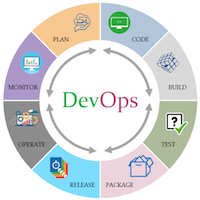
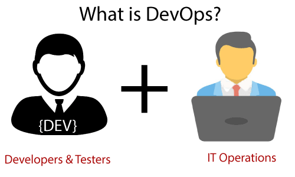
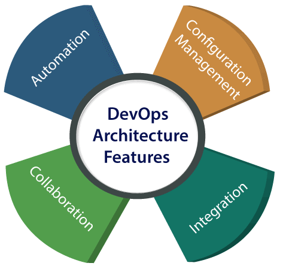

SVREC Technologies
SVREC TechnologiesDevOps Tutorial
The DevOps is the combination of two words, one is Development and other is Operations. It is a culture to promote the development and operation process collectively.
The DevOps tutorial will help you to learn DevOps basics and provide depth knowledge of various DevOps tools such as Git, Ansible, Docker, Puppet, Jenkins, Chef, Nagios, and Kubernetes.
What is Devops?
The DevOps is a combination of two words, one is software Development, and second is Operations. This allows a single team to handle the entire application lifecycle, from development to testing, deployment, and operations. DevOps helps you to reduce the disconnection between software developers, quality assurance (QA) engineers, and system administrators.
DevOps promotes collaboration between Development and Operations team to deploy code to production faster in an automated & repeatable way.
DevOps helps to increase organization speed to deliver applications and services. It also allows organizations to serve their customers better and compete more strongly in the market.
DevOps can also be defined as a sequence of development and IT operations with better communication and collaboration.
Why DevOps?
Before going further, we need to understand why we need the DevOps over the other methods.
* The operation and development team worked in complete isolation.
* After the design-build, the testing and deployment are performed respectively. That's why they consumed more time than actual build cycles.
* Without the use of DevOps, the team members are spending a large amount of time on designing, testing, and deploying instead of building the project.
* Manual code deployment leads to human errors in production.
* Coding and operation teams have their separate timelines and are not in synch, causing further delays.
DevOps History
~In 2009, the first conference named DevOpsdays was held in Ghent Belgium. Belgian consultant and Patrick Debois founded the conference.
~In 2012, the state of DevOps report was launched and conceived by Alanna Brown at Puppet.
~In 2014, the annual State of DevOps report was published by Nicole Forsgren, Jez Humble, Gene Kim, and others. They found DevOps adoption was accelerating in 2014 also.
~In 2015, Nicole Forsgren, Gene Kim, and Jez Humble founded DORA (DevOps Research and Assignment).
~In 2017, Nicole Forsgren, Gene Kim, and Jez Humble published "Accelerate: Building and Scaling High Performing Technology Organizations".
DevOps Architecture Features
Here are some key features of DevOps architecture, such as:
1) Automation
Automation can reduce time consumption, especially during the testing and deployment phase. The productivity increases, and releases are made quicker by automation. This will lead in catching bugs quickly so that it can be fixed easily. For contiguous delivery, each code is defined through automated tests, cloud-based services, and builds. This promotes production using automated deploys.
2) Collaboration
The Development and Operations team collaborates as a DevOps team, which improves the cultural model as the teams become more productive with their productivity, which strengthens accountability and ownership. The teams share their responsibilities and work closely in sync, which in turn makes the deployment to production faster.
3) Integration
Applications need to be integrated with other components in the environment. The integration phase is where the existing code is combined with new functionality and then tested. Continuous integration and testing enable continuous development. The frequency in the releases and micro-services leads to significant operational challenges. To overcome such problems, continuous integration and delivery are implemented to deliver in a quicker, safer, and reliable manner.
4) Configuration management
It ensures the application to interact with only those resources that are concerned with the environment in which it runs. The configuration files are not created where the external configuration to the application is separated from the source code. The configuration file can be written during deployment, or they can be loaded at the run time, depending on the environment in which it is running.